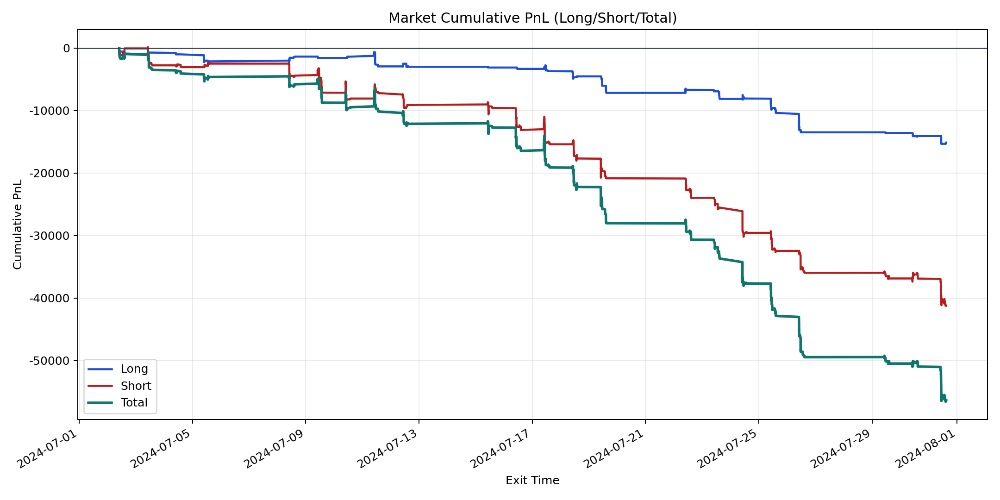
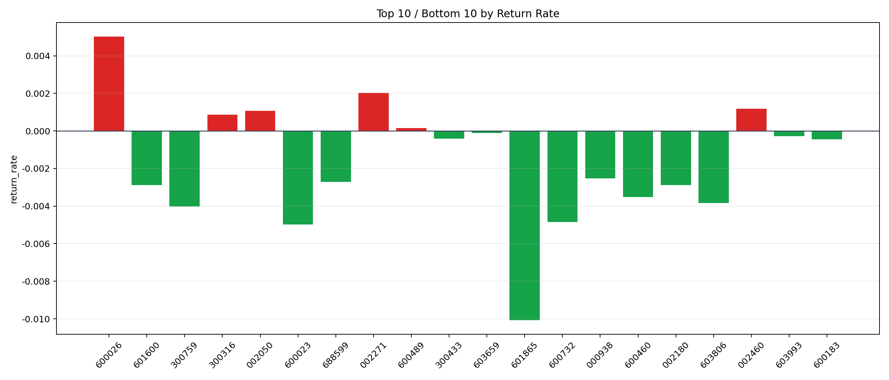

| repo_root | /home/haoranyou/data/output/dynamic_AUM_TAKER |
|---|---|
| period_months | 1 |
| period_label | 2024-07-02_to_2024-07-31 |
| start_time | 2024-07-02 10:04:47 |
| end_time | 2024-07-31 14:40:27 |
| n_trades | 2343 |
| n_symbols | 38 |
| total_pnl | -56364.20200000029 |
| long_total_pnl | -15120.224399999925 |
| short_total_pnl | -41243.97760000037 |
| total_entry_notional | 41907874.00000001 |
| long_entry_notional | 10275890.0 |
| short_entry_notional | 31631984.0 |
| total_return_rate | -0.0013449549361535323 |
| long_return_rate | -0.0014714272340400612 |
| short_return_rate | -0.0013038694506168303 |
| top_symbols_by_return | ["600026", "002271", "002460", "002050", "300316", "600489", "603659", "603993", "300433", "600183"] |
| bottom_symbols_by_return | ["601865", "600023", "600732", "300759", "603806", "600460", "601600", "002180", "688599", "000938"] |

